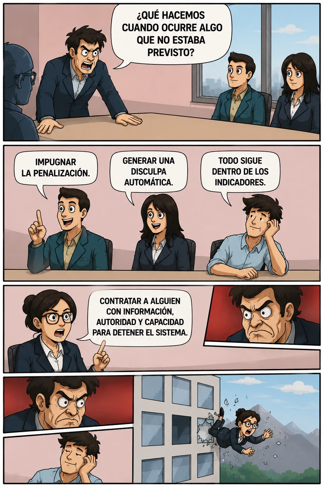

estrategIA #149 ·
Una persona capaz de detener el sistema
El contexto
La reunión empresarial acepta respuestas automáticas, pero rechaza la propuesta de contratar a alguien con capacidad real de intervenir. Acompaña La empresa que no estaba allí, un relato de ficción sobre responsabilidad y automatización.
Publicado en: estrategIA #149 — La empresa que no estaba allí
Leer el texto de la imagen
¿QUÉ HACEMOS CUANDO OCURRE ALGO QUE NO ESTABA PREVISTO? IMPUGNAR LA PENALIZACIÓN. GENERAR UNA DISCULPA AUTOMÁTICA. TODO SIGUE DENTRO DE LOS INDICADORES. CONTRATAR A ALGUIEN CON INFORMACIÓN, AUTORIDAD Y CAPACIDAD PARA DETENER EL SISTEMA.